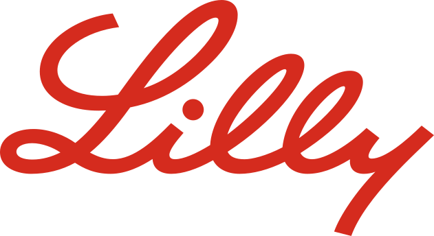
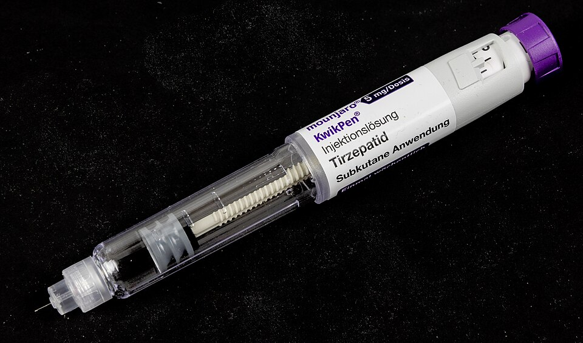

설립연도
1876년

미국 인디애나폴리스에 있는 150년 된 제약회사예요. 당뇨병 치료제 마운자로와 비만 치료제 젭바운드가 폭발적으로 팔리면서 2025년 매출이 45% 늘었고, 제약회사 중 처음으로 시가총액 1조 달러를 넘었어요. 2026년에는 먹는 비만 치료제 파운데이오(오포글리프론)도 미국 허가를 받았어요.
칸에 마우스를 올리거나 누르면 자세한 설명을 볼 수 있어요.

주사로 맞는 당뇨약 마운자로와 같은 성분의 비만약 젭바운드가 릴리 매출의 절반 이상을 차지해요. 2025년 두 약의 매출만 약 365억 달러였어요. 2026년에는 알약으로 먹는 비만약 파운데이오도 허가받았어요.
대표 예마운자로, 젭바운드, 트루리시티, 파운데이오
몸의 면역 체계가 잘못 작동해 생기는 류머티즘 관절염, 건선, 아토피, 궤양성 대장염 등을 치료하는 약이에요.
대표 예탈츠, 올루미언트, 옴보우
특정 유전자 변화가 있는 암세포만 골라 공격하는 표적 항암제를 만들어요.
대표 예버제니오(유방암), 레테브모
뇌 질환 치료제를 개발해요. 2024년 알츠하이머병 진행을 늦추는 키순라가 미국 허가를 받았어요.
대표 예키순라(알츠하이머), 편두통 치료제
원화 금액은 1달러 = 1,339.4원(2026년 11월 20일 유럽중앙은행 기준환율)으로 환산한 대략적인 값이에요.
| 기간 | 매출 | 순이익 |
|---|
사업마다 겨루는 상대가 달라요